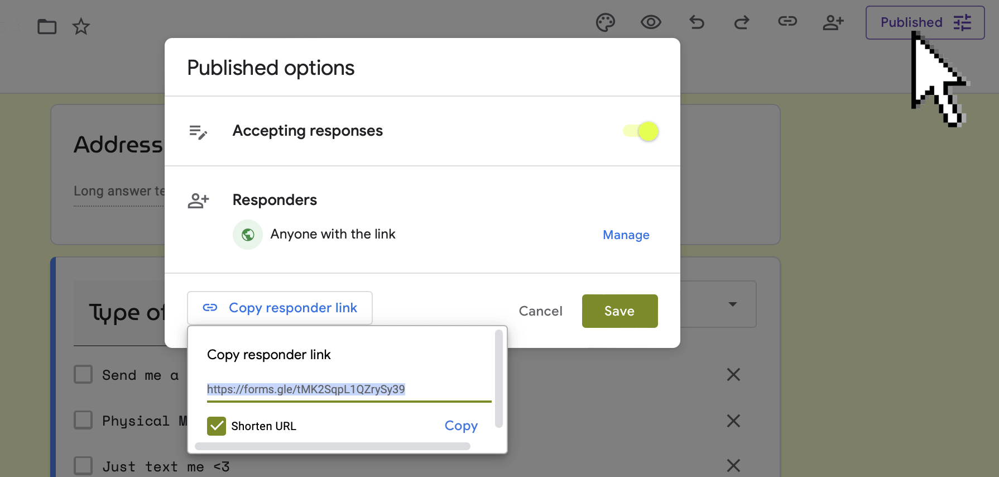
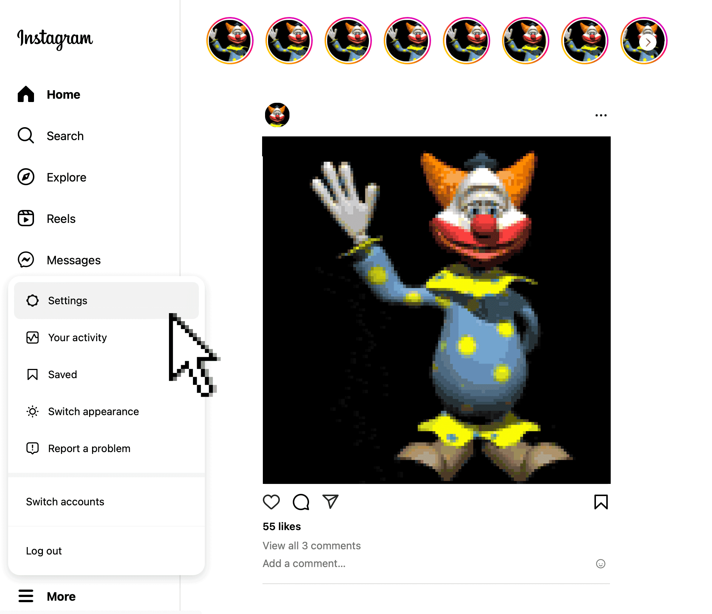
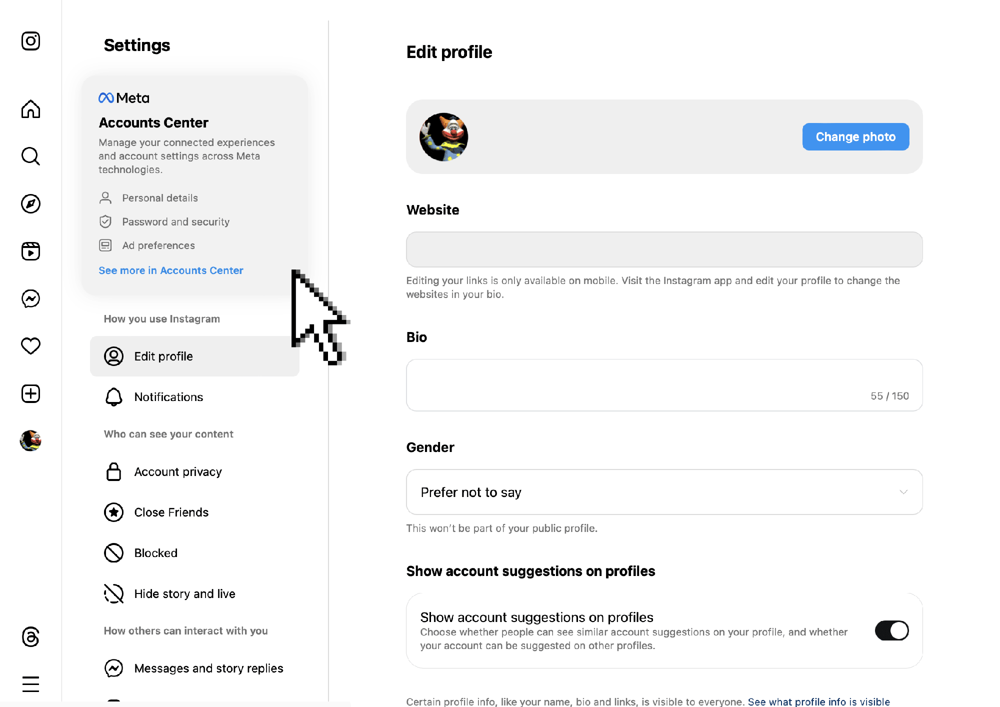
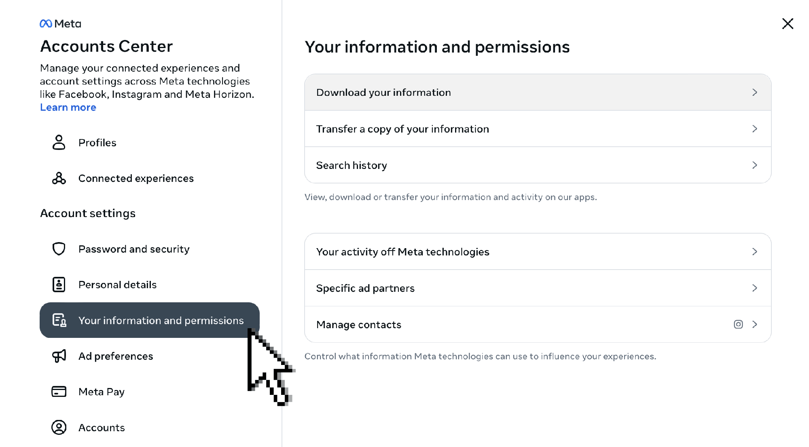
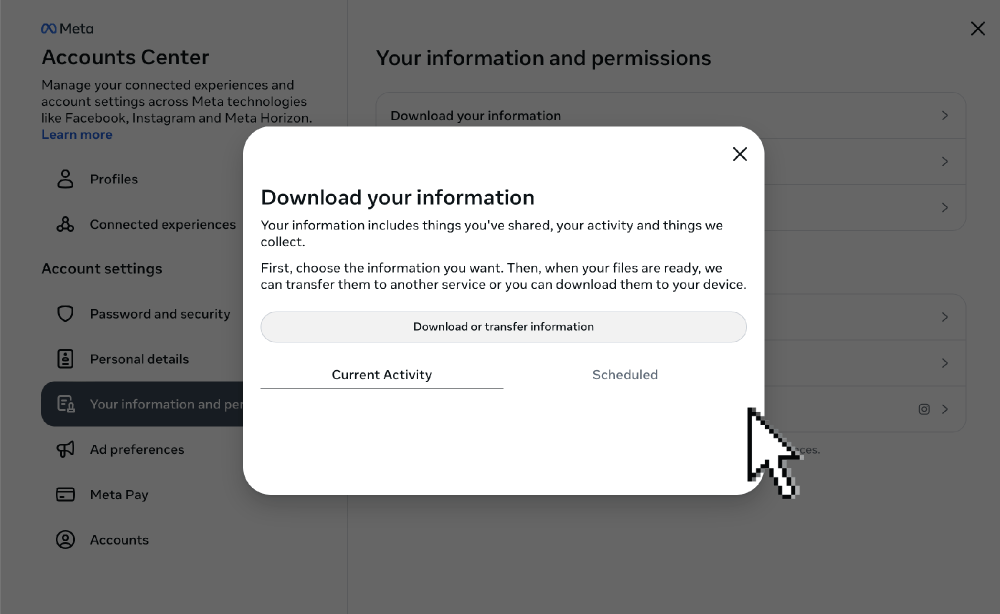
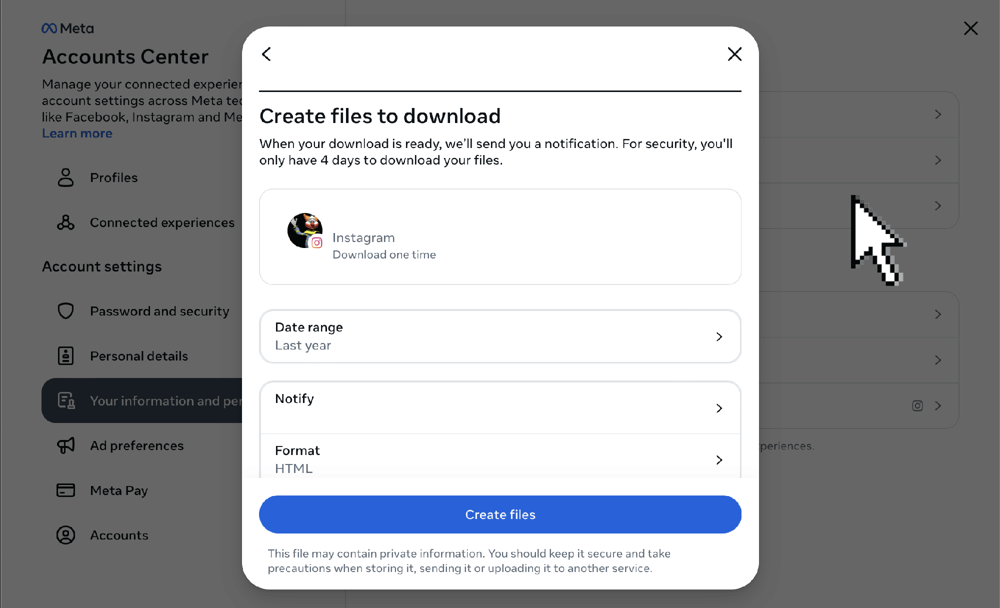
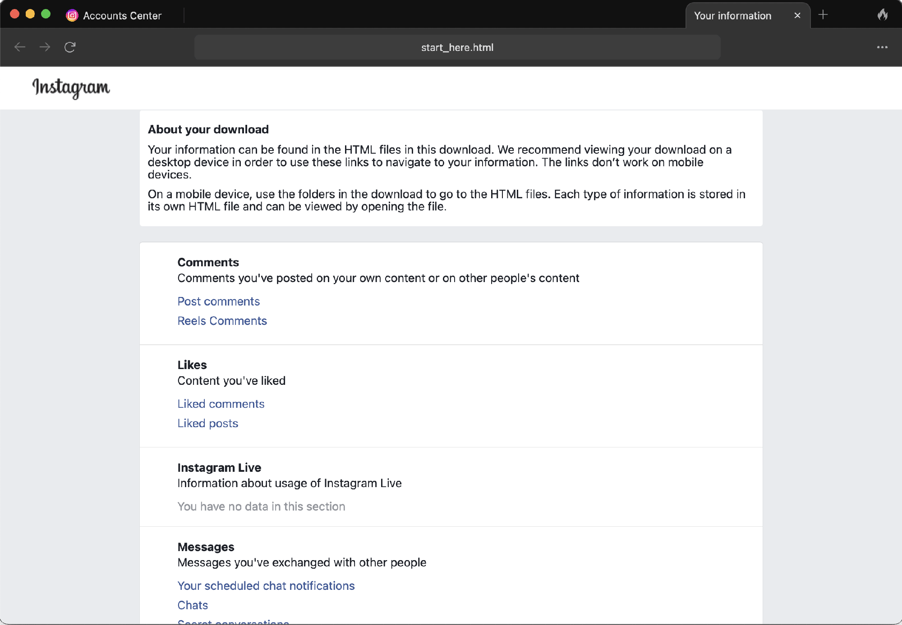

In the process of deleting my instagram, I learned it's a surprisingly daunting task. I made this short guide to help others navigate the process.
Unfortunately, much of our collective social life has been subsumed by instagram. Many of us depend on it for work, fundraising, organizing, keeping in touch, staying in the loop, etc. For this reason, I don't fault or judge anyone for continuing to use the platform. But for those willing and able to try, leaving instagram presents many opportunities.
Meta is harvesting our data on a massive scale—you will see how much when you download your instagram account information before deleting your account. Leaving their platforms is not enough to challenge the growing power of tech oligarchs—only organizing and revolution can do that—but it does prevent them from directly accessing your data and profiting off your every action online.
Being in voluntary exile from social media can be incredibly fruitful. It compels us to fundamentally rethink what it means to be "social." We must represent ourselves and connect with our communities without ready-made templates for sociality provided by platforms like instagram. These templates were always meant to constrain our imaginations, forcing us to squeeze the unruly togetherness of life into the mold of commodities and markets.
Instead, let's embrace the supposed "inconvenience" of needing to socialize with intention. Every cnonection with our friends, family, comrades, and future comrades is an oppertunity for creativity. We have neglected the care that is required to maintain relationships for too long; hopefuly leaving instagram will be one among many steps in our collective process of rebuilding our web of relations outside the frame of techno-capitalism. Let's not only reclaim our private lives, but our public ones too.
To me, leaving instagram has been like moving between apartments; I've had to pack my things, leave a forwarding address, and ask my friends for moving help. There are many creative ways to stay in touch with your community after deleting instagram, but I chose to just make a google form.
Make your form simple with optional questions so people actually fill it out and don't feel pressured to share all of their information. I used the following questions:
Once you have your google form set up, press "Publish" and then "Copy responder link." Check "Shorten URL" and then copy the URL.
I shared my google form link as both an instagram story and post. (I paired my form link and farewell message with a picture of my face; the algorithm loves faces.)
I also stayed on instagram for a long time because it was my primary source of news. Now, I stay informed using these other websites:
Once you're satisfied with your farewell, it is time to pack up your data (content, saved posts, messages, memories, etc.) and move it somewhere else so you can browse it offline.
To do that, log into instagram on a secure computer. Click "More" in the lower left corner and then click "Settings".
Then click the "Meta Accounts Center".
Click "Your information and permissions" in menu on the left. Then click "Download your information".
Click "Download or transfer information." I chose "All available information" but you can select "Some of your information" if you want to choose the specific types of data you'd like to download.
Once you've made your selections, click "Download to device."
I chose to set the "Date range" of the data download to "All time" and the "Media quality" to "High." Finally, click "Create files".
In my experience, it took instagram a couple hours to prepare the files and email me a link to download them. The resulting .zip file was about 1 GB, but I already used instagram rarely. That may not sound like a lot of data, but I was shocked at how much of my life it captured.
Once you've unzipped your file, open the "start_here.html" file. From there you can access all of your old posts, comments, saved posts, and much much more.
To actually delete your account, you have to click through a LOT of windows. First, return to the "Meta Accounts Center." Here is a list of all the buttons you need to press in order:
And that's it! You're done with instagram. As I said above, this is only a step in a much larger process of taking our social lives off these exploitative social media platforms. Now you can use all the time you would have been scrolling to read books on the toilet, organize for collective liberation, go for walks with friends, send mail to loved ones, print show posters, and bask in the joys of less mediated togetherness and solitude.
Much love to you all!